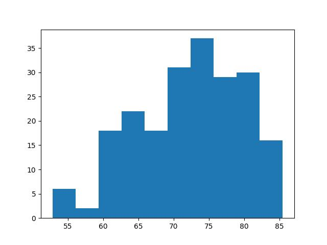
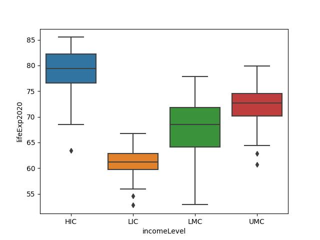
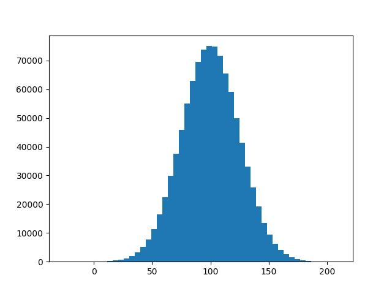
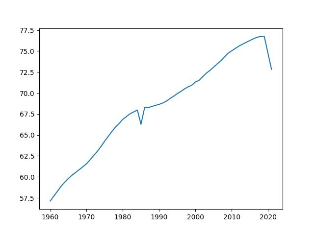
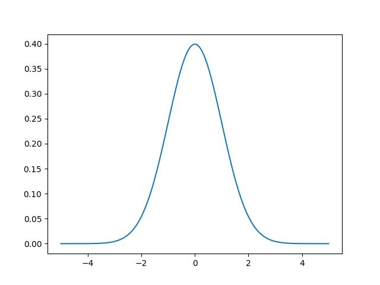

Analytics
Exploratory Data Analysis (EDA)
In this section we are going to see a brief description of different concepts as mean, standard deviation and so on, you also will find notebook(s) to replicate in python.
Slides
Levels of measurement allow us classify the data according to the information nature and its mathematical richness in terms of operations, the herarchy is the following:
Ratio
Interval
Ordinal
Nominal
This level of classification give us flexbility and precision in our analysis, consider the income of persons, you could collect ordinal ranges as high income, Medium income annd lower income and so, but this not allow us the degree of differences and lesser to known the exact value. Unlike if you collect the numerical values, with this information you could construct the ranges aforementioned and gain precision over the collected information.
Temperature measured in Celsious is not a intervale variable given that zero not indicate absence of temperature, also the definition of zero differ in Farenheith regarding celcious. Unlike zero meters and zero feets means the same; absence of distance!.
inverval variables have an arbitary zero point and ratio varibales have an absolute zero point. IQ is an example of interval scale, a IQ test of 80 and another of 160 not imply that that one person twice smarter that another, but you can said that a person is twice loaded of another.
This is important to carry out adecuately statistical description or analysis, for instance the coeffcieint of variation only have sense in ratio varaibles.
Frequencies - categorical data
Categorical data as countries name, kind of bacteria (gram positive or negative), or in sport base ball teams, could be described with absolute and relative frequencies.
Example: World bank data have a classification of countries by its level of income.
Category |
Absolute frequency \((n_{i})\) |
Relative frequency \((freq_{i})\) |
HIC |
82 |
0.378 |
LMC |
54 |
0.249 |
UMC |
54 |
0.249 |
LIC |
26 |
0.120 |
INX |
1 |
0.005 |
{kind=link}
We can also repsent the distribution of some numerical value in each category, for instance:
Category |
Relative share of population 2020 |
HIC |
15.624 |
INX |
0.365 |
LIC |
8.556 |
LMC |
39.982 |
UMC |
35.473 |
{kind=link}
Mean
Used as central tendency measure is sensible to outliers (very tiny or bigger values…)
Median and Quartiles
Quartiles split the data in four equal groups, therefore each slice group a \(\frac{1}{4}\) of data. Median is the data point that split the data in two halves, finally percentiles split the data in \(100\) equal groups.
Q1 = P25
Q2 = P50
Q3 = P75
The following table summary some values aforementioned:
Life expectancy 2020 |
|
count |
209 |
mean |
72,31 |
std |
7,483 |
min |
52,777 |
25% |
66,797 |
50% |
72,889 |
75% |
78,041 |
max |
85,498 |
Standard deviation and Interquantile Range
Why it is important this distiction? statistics give us; procedures, techniques and mathematical formulas to take better decisions with data this imply that we need draw the most information possible our data, and in this case the second formula give us a better approximation to the population parameter that describe the variability. See here Simulation
Coefficient of variation
Useful when need compare population with different characteristics, for instance the life expectancy in different geographical unities grouped by level of income.
Income Level (Category) |
Count |
Mean |
Std |
CV(%) |
HIC |
75 |
79,127 |
3,987 |
5,039 |
INX |
1 |
71,095 |
NaN |
NaN |
LIC |
26 |
62,106 |
4,805 |
7,737 |
LMC |
54 |
67,839 |
5,642 |
8,317 |
UMC |
53 |
72,246 |
4,232 |
5,858 |
According to the table the category LIC and HIC have considerably differences in means.
Histogram
This represent graphically the distribution of variable itself according to ranges, this histogram shows the life expectancy in some countries in the world.
The height of each bar is porportional to the number of data points that are in the respective range, for instance….
data |
1 |
2 |
4 |
10 |
8 |
5 |
12 |
Ranges |
Values |
Height |
(1-5) |
1,2,4,5 |
0,57 |
(6-10) |
8,10 |
0,29 |
(11-16) |
12 |
0,14 |
Note that column Height could sum up 1.
{kind=link}
Boxplot
There are three important things to remark in this graph, p25, p50, p75, we need sort the values of the variables from smallest to largest. The wide of box is denominated as Interquantile range.
Box plot also give us visual information about skewness of the distribution:
Skewness is a measure of the asymetry:
In poisitive skew (skewed to the right), The right tail is longer, the mass of the distribution is concentrated on the left of the figure.
{kind=link}
{kind=link}
In negative skew (skewed to the left), the left tail is longer; the mass of the distribution is
Concentrated on the right of the figure.
{kind=link}
{kind=link}
Boxplot is also very usefult to compare numerical variables over groups.
{kind=link}
from scipy.stats import norm
norm.ppf(0.25) # Give us the value of the 25 centil Q1
norm.ppf(0.75) # Give us the value of the 75 centil Q3
norm.cdf(norm.ppf(0.25))
The interquantile range (IQR) is \(Q_{3} - Q_{1}\) and for normal distribution is \(\approx 1.34\)
Now cosider the following:
Now we are searching two values as decision criteria to values more extreme of them as outliers values:
Reemplacing the values we need select a \(\lambda\) value:
If we select \(\lambda = 1.5\) then the probability of getting a outlier value is 0.0073.
norm.cdf(-2.68)*2 # The probability of be a outlier....
Normality
Notes about normality…
{kind=link}
Test of normality is important to decide the statistics used to describe data or to use parametric or no parametric statistics, for instance uses mean with no-normal variables could lead to misleading conclusions.
We also need normality for uses ANOVA and compare groups, for instance when you need test if the treatment A , B , C or D present significative difference among a group of patients.
there are numercial and graphically methods to test data normality, some of those are:
Shapiro-Wilk test
Kolgomorov-Sirnov test
Histogram
Q-Q plot
where used each one?
uses Shapiro-Wilk for small sample sizes (<50) uses Kolgomorov-Sirnov with sizes greater than or equal to 50. in both test \(H_{0}\) indicate normality.
The histogram must be as the presented above, the Q-Q plot or Quantile-Quantile plot graph expected vs observed quantiles in standardize data with standardize normal distribution. For normal data the points must be looks like a line.
In Q-Q plot we are comparing theoretical agains empirical quantiles of a variable. If the variable come from that distribution Q-Q plot is a straigth line.
{kind=link}
The following is a not normal especifically a exponential distribution:
{kind=link}
{kind=link}
Analytical methods are sensitive to sample size. assuming that \(X \sim N()\) with small samples \(p-value\) tend to be greater, and with larges samples \(p-value\) tend to be small.
Rule: if you have sample size \(< 30\) uses Q-Q plot.
So far, we conclude that the descriptive statistics aim to communicate the major quantity of information in the simplest way.
Line chart
Sometimes we need decribes variables as a time series.
{kind=link}
EDA laboratories I
Here we find some laboratories to practice.
Covariance
Correlation
Measure the degree of linearity among two variables, take values among -1 and 1, there is not correlation among variables when the coefficient is equal to zero.


For this image put here the notebook, where two important pearson and spearman.
Percentage of rural population |
Co2 tons per capita |
||
GDP 2020 |
Pearson coefficient |
-0,634 |
0,722 |
Spearman Coefficient |
-0,712 |
0,907 |
Here there are a plot of correlation matrix…
EDA laboratories II
Matrix correlation could be useful…
Preprocessing
Standarization
where \(\bar{x}\) is the mean, and \(\sigma\) is standard deviation, this very useful given that \(z \sim (0, 1)\) follow a distribution with mean zero and standard deviation of one.
You can see it from:
note that \(\sum_{i=1}^{n} (x_{i} - \bar{x}) = n\bar{x} - n\bar{x} = 0\) therefore \(\bar{z} = 0\).
Now consider the variance of the variable \(z\):
reemplacing \(\bar{z}=0\) and \(z_{i} = \frac{x_{i} - \bar{x}}{\sigma_{x}}\) then:
Given that \(\sigma_{z}^{2} = \frac{\sum (x_{i} - \bar{x})^{2}}{n}\), This show us that \(\sigma_{z} = 1\).
Note
Normality
What it is normal?
We are going to say that \(X\) is normal as; \(X \sim N(\mu, \sigma)\) Discovered by abraham de moivre.
Standard Normal distribution
\(X \sim N(0,1)\).
{kind=link}
The before distribution have \(\mu=0\) and \(\sigma = 1\).
our guide text..
There are a family of nornal distributions described by its mean and standard deviation.
its \(x\) is described as:
{kind=link}
Each curve is described by its median and standard deviation.
Laboratories
Handling categorical variables
In this section we are going to work with categories in Machine learning, using important methos as OneHotEncoder.
Note
Prediction perfromance assestmet
OCD occurs whent you cant stop of thinking about something, but i could i sure that i have OCD?, you can visit your professional health, and take several test to diagnose, but what happens if the test is wrong? or what happend if the test said that not and your thoughts are persistent!
imagine a similar situation with a major degree of certain, whichs means? this means that there are a golden standard to diagnose, and you are testing a cheaper method, think in diagnose of covid-19 there are some situations
Test say not and i’m really not have covid-19
Test say not and i’m reall have covid-19
Test say yes and i’m really have covid-19
Test say yes and i’m really dont have covid-19
This could be summaries in:
Ok!, then how good fit this test?, there are some metrics that i could study:
specificity
In other words, you can understand as the probability of get a negative result given that the persons not have a the condition.
sensitivity
This is the probability of get a test positive result when really exist the condition.
All this measures are built on the confusion matrix
Confusion Matrix
Disease (Positive) |
No-disease (Negative) |
|
Test Positive |
True Positive (TP) |
False Positive (FP) |
Test Negative |
False Negative (FN) |
True Negative (TN) |
The confusion matrix present the different combinations of possible results.
Accuracy
Warning
This measure is biased when there are unbalanced classes
is a unbiased measure of performance given that is affected by unbalanced classes.
Now, we are going to see in probability terms to have major intuition of the some measures.
Note
Bayes theorem
Think a moment what is the relationship behind precision and recall or recall and predicted positive values?.
Note that \(P( A \cap B) = P(A \mid B)P(B)\) and \(P(A \cap B ) = P(B \mid A ) P(A)\), therefore
We can write:
\begin{equation} P(A \mid B ) = \frac{P(B \mid A) P(A) }{P(B)} \end{equation}
How a model could be snesible and not precise?
the patient \(X\), have a diagnose confirmed \(+\) or \(-\) and the results test as \(\hat{+}\) or \(\hat{-}\) thus a patient with confirmed diagnose and a negative result test is denoted as: \(X_{+}^{\hat{-}}\), Analize the following situation:
Notice that the test have a sensitivity of 100%, and whics is the value of precision? consider that a false positive case is positive test when really is a negative confirmed diagnosed.
We could be interested in a model that the two properties
how is related precision and specificity?..
Note
Take in mind that precision and specificity are related by False Negatives.
You could uses take an average two ponder recall and precision, however note that the mean not differentiated of balanced (model 4) and extreme cases (models 1,2,3).
Recall |
Precision |
Mean |
F1 -score |
|
Model 1 |
0,3 |
0,8 |
0,55 |
0,44 |
Model 2 |
0,8 |
0,3 |
0,55 |
0,44 |
Model 3 |
0,12 |
0,98 |
0,55 |
0,21 |
Model 4 |
0,52 |
0,58 |
0,55 |
0,55 |
Model 5 |
0,83 |
0,91 |
0,87 |
0,87 |
Model 6 |
0,08 |
100 |
50,04 |
0,16 |
Threshold to profit - risk
What level of precision and sensitivity could maximize the profit?
Training and Test
A simplified workflow could be described as;
A common way to build machine learning models is assest the performance of the model to solve a particular task; for instance classification of a new message in spamn or jam.
in ML is important to known that the evaluation of a model is a large task, that include the metric that quantify the model performance until the dataset selected,
Note
Crossvalidation
K-fold
Over a dataset \(D\) make \(k\) partitions(folds) \((d_{1}, d_{2}, d_{3}, ..., d_{k})\) where \(d_{i} \cap d_{j} = \emptyset\) \(,\forall i \neq j\), and \(\bigcup_{i=1}^{k} d_{i} = D\). The goal is select the \(p\) partition to evaluate the training made it with another \(k-1\) partitions. This process is repeated with each partition \((d_{i})\) of the \(k\) as validation dataset. Now defining \(\Xi(d_{j})\) as the model performance in the dataset \(d_{j}\) then the overall assesment of the model will be:
Stratified K-fold
Given a more realistic scenario, each partition have the target variable in roughly the same approxiamate proportion that original dataset….
Note
Hyperparameter tunning
It is important note that grid search not is the only way to search the hyperameters in a model, for instance GA’s also can be used see here.
In machine learning algorithms the learning process is affected by some parameter, this means that there are paraemters that are not learned by the algorithm, si no por el contario the user must specified, for instance learning rate in multilayer perceptron. Therefore the objective is find the set of parameters that optimize the algorithm.
Grid search
This approach consist in test all the possible combinations of parameters defined by the users for instance test the epochs:\((100, 120, 300)\) and the learning rates of \((0.05 , 0.01, 0.001)\) that give us a total of \(9\) combinations,
In this case, how will be selected the number of epocs and the value of the learning rate?
An overall metric performance will be obtanaied using cross-validation and the set of parameters
with higher value will be selected \(\max \Xi(X | \alpha, epochs)\).
this approach is computationally expensive, and not guaranteed reach a optimal solution,
there are some other techniques as random search`, bayesian optimization`, evolutionary techniques, among others…
Feature selection
there are a many techniques to select variables,
Feature enginiring
Logarithm transformation
A symmetric distribution, mean and median are equal, therefore in the central half of data have a lesser value and the other halve have a greater value.
Skewed is presented in some variables for instance in Gross Product Domestic (GDP), namely right skewed, this mean that only a minor fraction of countries have a huge GDP! otherwise. Another example could be the time that a person is in hospital, and a transformation aim to be more symmetric distribution.
How you believe that is the behavior of the retirement age?..
import numpy as np
np.log(10) - np.log(1)
np.log(100) - np.log(10)
np.log(1000) - np.log(100)
what happend whith the difference?, this behavior is more adecuate in right-skewed variables. in left-skewed variables you could uses quadratic or cubic transformation why?.